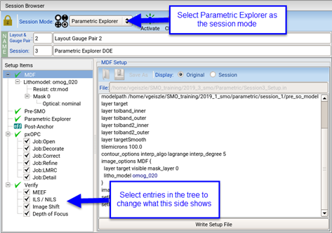

The Parametric Explorer tests different
source shapes to find the best candidate for a diffractive optical
element (DOE) to use with a design. While most of the job setup
between Free-Form pxSMO and Parametric Explorer is similar, some
differences exist. This procedure describes the steps that are specific
to setting up Parametric Explorer runs.
Restrictions and Limitations
Video
The video series “Getting Started with Parametric Explorer” describes
and demonstrates the main functionality and key workflow steps for
using the Parametric Explorer.
The “Overview” video describes the main functionality and key workflow
steps of Parametric Explorer.
The “Demonstration: Session Mode Selection” video
demonstrates session mode selection for Parametric Explorer.
The “Demonstration: Parametric Explorer Setup”
video demonstrates setting up the Parametric Explorer step. This
includes selecting the source type, selecting the source shape,
specifying the source shape parameter values, and specifying the
polarization type, and loading a custom source.
The “Demonstration: Job Run Setup” video can be
found in the video section of “Cloning Sessions and Running Efficiently”. The “Demonstration: Parametric Plot for Reviewing Results” video can
be found in “Other Plots”. The “Demonstration: Custom Parametric Plots for Reviewing Results”
video can be found in the Usage Notes of “Custom Parametric Plot”.
The “Conclusion and Finding Additional Information”
video describes where to find additional information.
Procedure
- In the Run Control pane of
the RET Selection window, select a session. If you see the Gauge
Analysis pane, select the Session Browser tab
at the bottom of the pane.
Figure 1. Initial
Setup Pane for Parametric Explorer
A green check means that the item is able to be run with no changes.
(You may still want to check its settings, however.) A circled red
X means the item requires additional information.
- Change
the session mode to Parametric Explorer.
- Adjust the smoothed target. You can create several
preview layers to compare, and use the best one.
- Click Pre-SMO in
the Setup Items tree to open the Pre-SMO Setup pane.
- Adjust
values. The goal is to match the achievable nominal contour.
The default values for curve_target are critical
distance of (λ/NA)/3 based on the nominal optical model, a line
end ratio of 1.0, and maxJog of 0.010 microns. It is recommended
to tune these values to achieve the expected curvature of the layer.
You can smooth the target
with “setlayer curve” instead by changing the Curve Command setting.
You can tune the results
by entering any keyword-value pairs for the command in the Curve
Options field. The options for setlayer curve and setlayer curve_target are described in the Calibre nmOPC User’s
and Reference Manual.
- Check
the results by clicking Curve Target Preview.
In the dialog box, specify a unique layer number so that you can
compare the various experiments. Use the layer name to record the
values you used.
Unlike the other parts of the setup, previewing
the curved target requires the session is the active session. Click Activate to
make it the active session.
- Click Generate
Preview Layout. If you receive any errors, adjust the
keywords in the Curve Options field.
- Set the
Parametric Explorer options to investigate one or more illumination
types and their parameters.
In
Global Settings, check that the Source Type and Polarization match
the scanner. Adjust the polarization weight if testing multiple polarization
types. When using the erf source type, specify
values for Dillumangle, DSigma,
and Dsigma In that are suitable for the illumination
shape that will be selected in Parametric Settings.
In Parametric
Settings, select one or more illumination shapes to explore. For
each parameter of each illumination shape, click Edit to
specify a value or a range of values that will be tested. The total
number of combinations increases to the product of the numbers of parameters.
For example, if three parameters are specified with three values
each, the total combinations is 27.
To compare
the specified illumination shapes to a baseline source, select Custom in
Parametric Settings. Click Edit and choose
one or more custom source files. The total combinations increases
by the number of imported sources.
To investigate
different numerical aperture (NA) values, click Edit in
Model Settings. Specify the NA values to test. The source is scaled
to the specified NA value. The total combinations updates to the product
of the number of NA values multiplied by the sum of the parametric
settings and a custom source (if specified).
- Follow
the remaining steps in “Setting Up the Point Tools”.
Note: During the OPC stages, all defined gauges (regardless
of the SMO Enable setting) will be run. To remove gauges from the
process window calculation, turn them off in the cPW column in the
gauge settings. Change CD tolerances in the gauge settings if 10%
is not desired. These CD tolerances are used for the common process
window calculation.